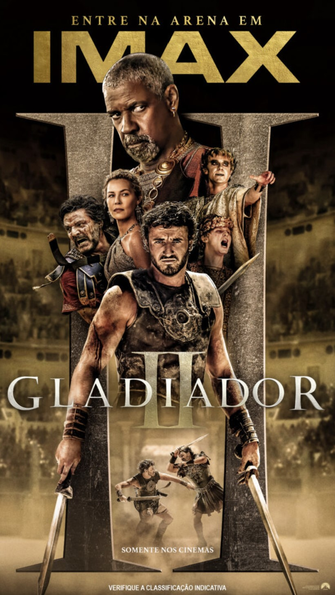

Gladiador II

Sinopse
Do lendário diretor Ridley Scott, ‘Gladiador II’ continua a saga épica de poder, intriga e vingança ambientada na Roma Antiga. Anos depois de testemunhar
a morte do venerado herói Maximus nas mãos de seu tio, Lucius (Paul Mescal) é forçado a entrar no Coliseu depois que seu lar é conquistado pelos
imperadores tirânicos que agora comandam Roma com mão de ferro. Com a raiva em seu coração e o futuro do Império em jogo, Lucius deve olhar
para o seu passado para encontrar força e honra para devolver a glória de Roma ao seu povo.